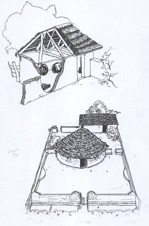

REPORT OF A SITE INVESTIGATION OF HOUSES BUILT AT
ROSEDALE EXT 64, UITENHAGE
THE INSPECTION
The site visit was conducted during the course of March 1993, on a hot and clear day with little moisture present. The Survey Party included Mr Willie Saayman, Chairman, and three other members of the Rosedale Community Representative Committee who introduced the Author to local house-owners. Residents were interviewed, and their complaints were noted down in detail. These have been appended to this report in the form of Site Notes.
THE HOUSES
The dwellings are simple, rectangular plan, gable-ended cottages consisting of two bedrooms, a living room with an adjoining kitchenette and a bathroom. However only the external walls of the houses were built, and barring the bathroom, no other internal walls were provided.
Construction is in plastered stock-brick, while the roof is covered by corrugated asbestos sheeting supported by timber rafters. With the exception of the bathroom, no ceilings were fitted as part of the original contract.

The houses were provided with electricity, but the electrical light fittings were generally found to be cheap and incapable of taking the wear-and-tear of normal daily usage. Residents complained of shoddy installation, and pointed to defective plugs which remained live even after being switched off. The original price of the house did not include the fitting of a hot-water geyser.
Although houses are fitted with some air-bricks, none of them are located below ceiling height. As a result those residents who have installed ceilings complain that their homes are hotter now than they were before, when there were no ceilings.
Residents also complain of smells originating from their WC flushing system, which is fitted with a two-way valve and has no venting. The outside plumbing has also not been fitted with a stop-cock, and there is therefore no way of effecting repairs to the water pipes.
FINANCIAL
The houses were built by the Uitenhage Municipality or its agents, who have subsequently also been responsible for effecting repairs and Retention Maintenance. They were designed to house families earning between R751 and R800 per month. These were then sold to members of what were formerly described in racist terms as the "Coloured" community. Initially prices were set at R29 700, and houses were available on 30 year bond, but once some families began to default on their monthly repayments, their homes were repossessed and sold to new owners for R34 000.
As a result of the Community's general unhappiness with the quality of their housing, a dispute was entered into in November 1991, and, as a result, in December 1992 the Municipality deducted R5000 from the purchase price of all houses in Rosedale Ext 64. This applied equally to all houses, whether they cost their owners R29 700 or R34 000, thus giving the former what some residents consider an unfair advantage.
FINDINGS
- Residents have claimed that their homes formerly suffered from extensive water seepage problems at plinth or DPC level. Subsequent repairs conducted by the Uitenhage Municipality appear to have rectified this problem. It was not possible to ascertain the validity of resident's complaints in this matter owing to the fact that the problem area has been covered over by a solid concrete bead. However its potential root causes appear to indicate a potential negligent or fraudulent performance on the part of the builders. It is therefore my strong recommendation that this matter be investigated more fully by a suitably qualified building expert.
- All of the houses inspected suffered from some degree of water penetration in their walls. This has resulted in unsightly moisture patches and mouldy growth on the interior wall surfaces. Although in many instances this was most evident on those walls facing away from prevailing winds, this was not always the rule. It was not possible to ascertain the exact nature of this problem without first stripping extensive areas of wall of its plaster covering. However a survey of stock bricks left behind by the builders at No 30 Mallard Street has shown that their average quality was extremely variable, ranging from poorly made, sun-dried, farm bricks through to kiln-baked face bricks of good quality. This indicates that the source of the problem may lie in the quality of the materials used. It is therefore my recommendation that this matter be investigated more fully by a suitably qualified building expert.
- Some considerable confusion exists in the Community on the question of bond repayments, which seem to fluctuate in individual cases from R279, R283, R292 and R300 per month respectively. Many residents have also claimed that they have never received the benefit of the Government's subsidy for first time home-owners. It is suggested that the Municipality enter into a series of workshops with the Community in this matter, possibly with the assistance of the Building Societies and Banks involved in the Area.
- Some 12% of this community appear to be unemployed, and as a result of this dispute some 95% of local residents have fallen into arrears with their bond repayments to the sum of anything between R400 and R6000. It is urged that the parties concerned come together to find a manner of bringing a measure of financial relief to the community as a whole, as an integral part of any proposed settlement to the current dispute.
- A number of other, relatively simple, but nonetheless irksome problems were noted. This includes the fact that all kitchen doors inspected had difficulty in excluding rainwater, wind and dust. These small and relatively inexpensive tasks should be addressed by the Municipality at their earliest convenience as part of a simple exercise in trust-building and good-will generation within the Community.
CONCLUSION
Although the Community appears to have a number of valid and potentially serious complaints, the general integrity of their homes does not appear to be at issue. Should the problems described above be redressed satisfactorily, there is no reason why their houses should not become worthwhile investments for the future.
POSTSCRIPT
This report has never been made available for public consumption. See FRESCURA, Franco. 1983. Report on Housing Conditions in Rosedale Ext 64. Port Elizabeth: EDU, September 1993.